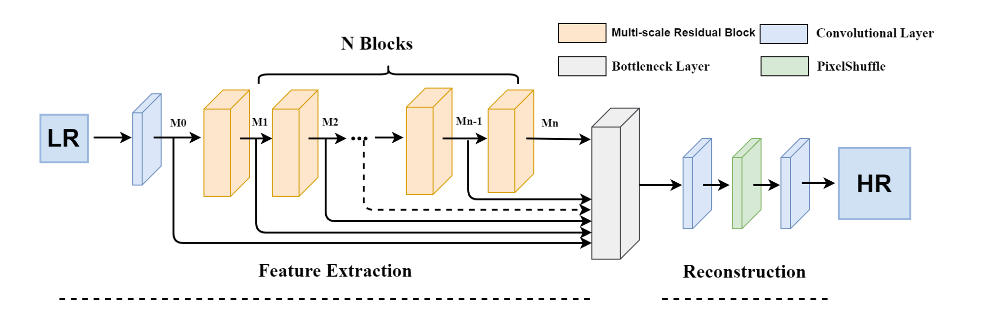
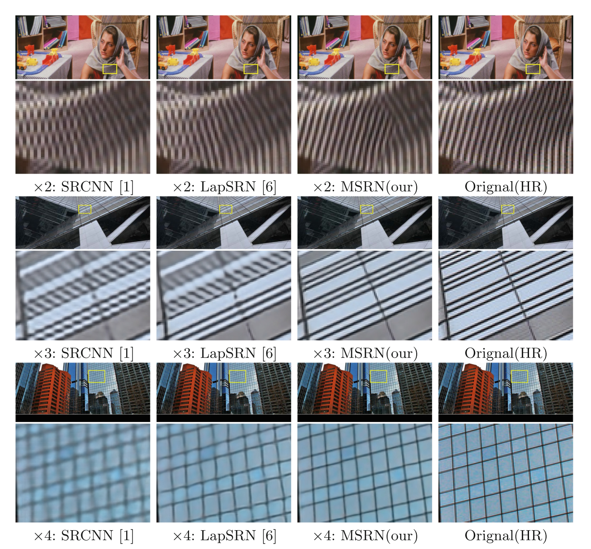
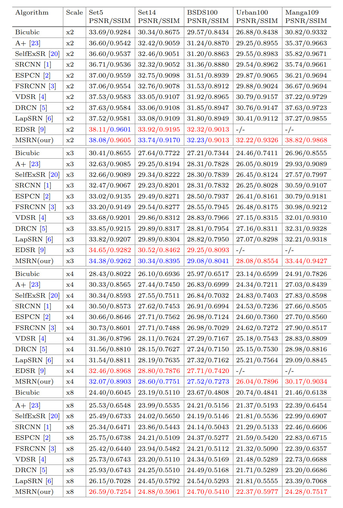

Multi-scale Residual Network for Image Super-ResolutionJuncheng Li1 Faming Fang1 Kangfu Mei2 Guixu Zhang11 East China Normal University 2 Jiangxi Normal UniversityContact us: cvjunchengli@gmail.con |
Abstract
Recent studies have shown that deep neural networks can significantly improve the quality of single-image super-resolution. Current researches tend to use deeper convolutional neural networks to enhance performance. However, blindly increasing the depth of the network cannot ameliorate the network effectively. Worse still, with the depth of the network increases, more problems occurred in the training process and more training tricks are needed. In this paper, we propose a novel multiscale residual network (MSRN) to fully exploit the image features, which outperform most of the state-of-the-art methods. Based on the residual block, we introduce convolution kernels of different sizes to adaptively detect the image features in different scales. Meanwhile, we let these features interact with each other to get the most efficacious image information, we call this structure Multi-scale Residual Block (MSRB). Furthermore, the outputs of each MSRB are used as the hierarchical features for global feature fusion. Finally, all these features are sent to the reconstruction module for recovering the high-quality image.
MSRN
|  |
Visual Results
|  |
PSNR/SSIM Results
|  |
Downloads
| Paper | : [ ECCV2018_MSRN.pdf ] |
| Poster | : [ MSRN_Poster.pdf ] |
| Experimental results | : [ ECCV2018_MSRN_SR_images.zip ] |
| Pre-trained model | : [ ECCV2018_MSRN_premodel.zip ] |
| Source Code. | : [ Code ] |
BibTex